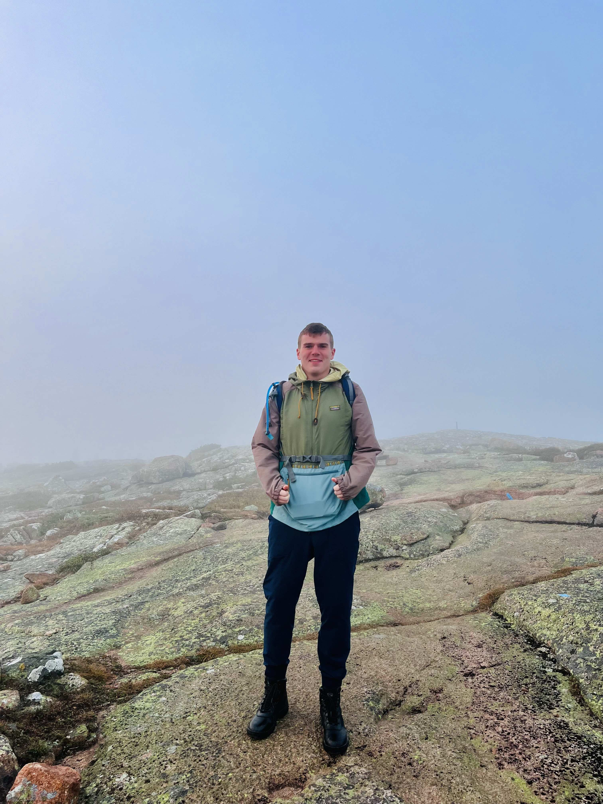

Hello, welcome to my first website! This is one of the first iterations of my website and I look forward to improving this over the year as I learn more about website development. I am currently a junior in University of Hartford where I study Computer and Electornics Engineering Technology with a minor in Computer Science. I also am currently a Sensor and Systems Integration and Test Intern at The Charles Stark Draper Laboratory in Cambridge, MA. I have been working at Draper for the past 8 months. I have enjoyed a lot of things about the company anad learned a ton of new skills that I have been happy to test in classes while at Hartford.